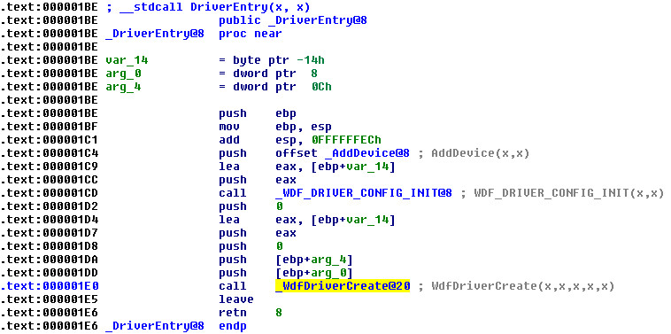
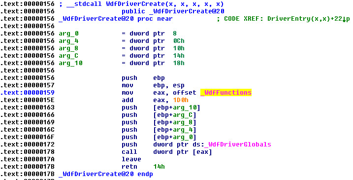

Steward
分享是一種喜悅、更是一種幸福
驅動程式 - Kernel Mode Driver Framework (KMDF) - 教學說明 - 1. 驅動程式進入點DriverEntry()
參考資訊：
https://wasm.in/
http://four-f.narod.ru/
https://github.com/steward-fu/ddk
C/C++程式的進入點是main()，而對於KMDF驅動程式而言，它的進入點則是DriverEntry()，Microsoft規定DriverEntry()必須使用C語言方式Export，若是使用C++檔案(.cpp)撰寫，則必須使用export "C"關鍵字做修飾輸出，否則系統將無法正確載入驅動程式
DriverEntry()定義如下：
NTSTATUS DriverEntry(PDRIVER_OBJECT, PUNICODE_STRING);
系統透過呼叫DriverEntry()載入驅動程式並傳入兩個參數，第一個參數PDRIVER_OBJECT是指向該驅動程式的資料位置，該位置會包含驅動程式的所有資訊，這些資訊並非全部都提供給使用者使用，有些欄位是Undocument的，保留給系統調度使用，Microsoft可能隨系統不同而修改，因此，建議使用者不要使用這些Undocument欄位的資料，而另一個參數PUNICODE_STRING則是該驅動程式的Registry位置，驅動程式在安裝時，系統都會產生一個註冊表項目(位於CurrentControlSet\Services\)，該項目就是當Windows系統啟動時，用來載入驅動程式使用的，Windows系統依據註冊表來決定哪些驅動程式需要被載入以及載入的順序，因此，隨意修改註冊表，可能會導致驅動程式無法被正確載入，嚴重時，可能無法啟動系統
使用者需要注意的是，就算有多個相同的裝置(如：兩個一樣型號的USB滑鼠插入電腦)，系統只會在發現第一個裝置時，載入該驅動程式並產生一份Driver Object，之後發現的裝置，系統還是使用那份已經產生的Driver Object，使用者可能很好奇，相同裝置使用同一份Driver Object資料？那每個裝置的驅動程式資料不就互相干擾嗎？答案是：不會的，因為每個裝置必須產生自己的Device Object(跟Driver Object是不一樣的東西)，每個裝置的資料必須存在自己產生的Device Object中，因此，每個Device Object各代表不同的裝置
那在DriverEntry()副程式，需要做哪些事情呢？
| KMDF 驅動程式 | WDM 驅動程式 | Legacy (NT-Style) 驅動程式 |
|---|---|---|
| 基於WDF架構，需要產生WDF專用的Driver Object並且設定AddDevice Callback副程式，值得注意的是，其餘Callback副程式已經改成在AddDevice()做設定 | 需要註冊使用到的Callback副程式，如：AddDevice()、DriverUnload()等 | 除了需要註冊Callback副程式以外，還要產生Device Object，因為Legacy驅動程式沒有AddDevice() Callback，所以需要在DriverEntry()產生Device Object |
範例：
NTSTATUS DriverEntry(PDRIVER_OBJECT pMyDriver, PUNICODE_STRING pMyRegistry)
{
WDF_DRIVER_CONFIG config = { 0 };
WDF_DRIVER_CONFIG_INIT(&config, AddDevice);
config.EvtDriverUnload = DriverUnload;
return WdfDriverCreate(pMyDriver, pRegistry, WDF_NO_OBJECT_ATTRIBUTES, &config, WDF_NO_HANDLE);
}
基本上，PNP類型的驅動程式不需要設置DriverUnload Callback副程式，除非需要在DriverEntry()配置資源，然後在DriverUnload()釋放資源，因為PNP類型的驅動程式主要以AddDevice()為主要入口，資源的配置應該改在這個地方，需要注意DriverEntry()的回傳值部份，因為回傳值會決定載入驅動程式的成功或失敗，另外，除了DriverEntry()名稱必須固定以外，其餘Callbak的名稱可以隨意命名
那WdfDriverCreate()裡面究竟藏有什麼東西呢？可以參考如下逆向的程式碼：

幾乎所有WDF的呼叫都是藉由WdfFunctions[]這個Function Pointer來操作

eax加上0x1d0的偏移就是WdfDriverCreateTableIndex，其索引就是：WdfDriverCreateTableIndex(116*4)，在WDF v1.9中，WdfFunctions有400多個Functions可以使用，司徒說明這些東西的用意不是想要嚇大家，而是要告知WDF重新封裝了一些東西，而WdfFunctions就是一個關鍵指標，了解這個東西有助於Debug KMDF驅動程式